Los organelos son las estructuras internas especializadas que permiten a la célula vegetal mantenerse viva y funcional.
El trabajo coordinado de estos componentes permite que la planta respire, fabrique su propio alimento y mantenga la estructura rígida que la caracteriza.
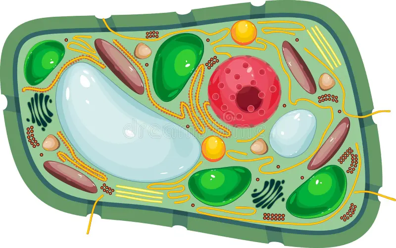
Da click en ala imagen para conocer más aceca de cada organelo.
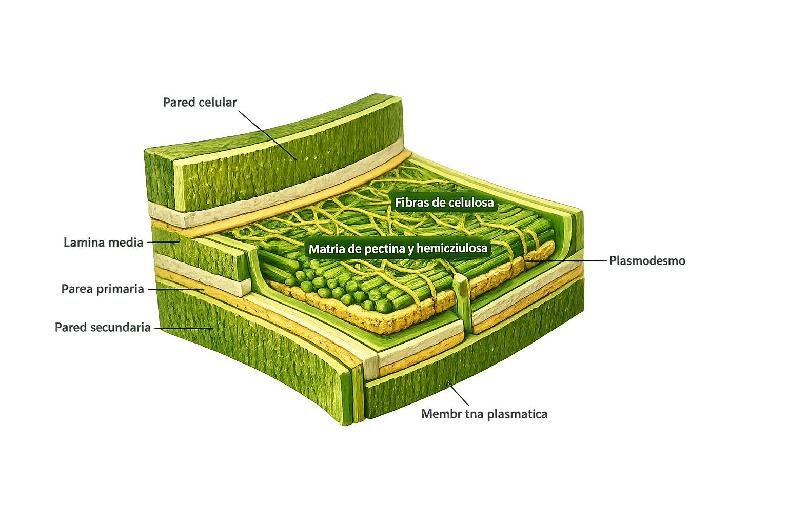
La pared celular de la célula vegetal es la cubierta externa y rígida que está formada fundamentalmente por celulosa y su principal función es la de protección. Esta pared celular es la estructura mediante la cual se conectan las diferentes células de los tejidos vegetales.

Los cloroplastos son orgánulos celulares exclusivos de las células vegetales y algas, encargados de realizar la fotosíntesis. En ellos se transforma la energía lumínica en energía química, produciendo oxígeno (O₂) y azúcares a partir de agua y dióxido de carbono (CO₂)
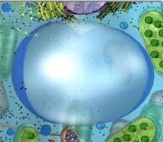
La vacuola vegetal es un organelo en forma de compartimento fluido que funciona como el centro de control hídrico y de almacenamiento de la célula. Sus funciones principales son: almacenar agua, nutrientes y desechos; regular la presión de turgencia para mantener la planta firme y erguida; y controlar el equilibrio osmótico para que la célula se adapte a los cambios del entorno.
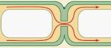
La célula vegetal contiene pequeños canales, llamados plasmodesmos, que atraviesan la pared celular y comunican células vegetales vecinas. Permiten el paso de sustancias como agua, azúcares, proteínas, e incluso mitocondrias.
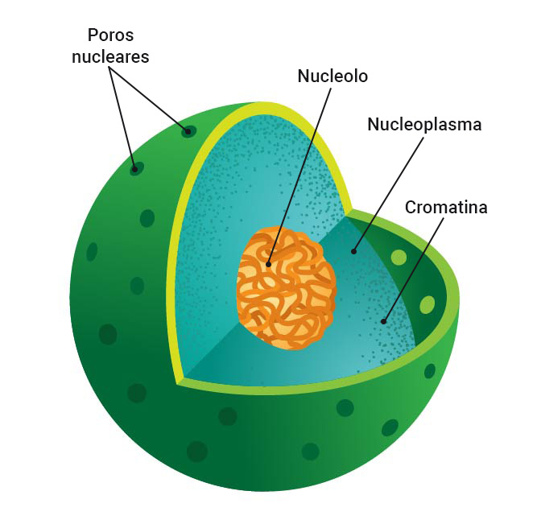
El núcleo de la célula vegetal es un orgánulo que se encuentra rodeado de una estructura doble llamada envoltura nuclear. En él se encuentra contenida la información genética o ADN (Ácido desoxirribonucleico) responsable de procesos como el metabolismo y el crecimiento y diferenciación celular. La información genética contenida en cada núcleo de cada célula vegetal es la misma en todos los miembros de una misma especie.
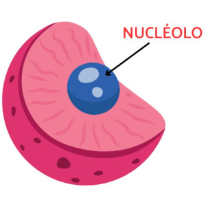
Es una región grande dentro del núcleo, y es la parte más grande dentro del núcleo. Aquí se fabrican los ribosomas a través de la síntesis del rRNA, es decir, el RNA ribosómico.
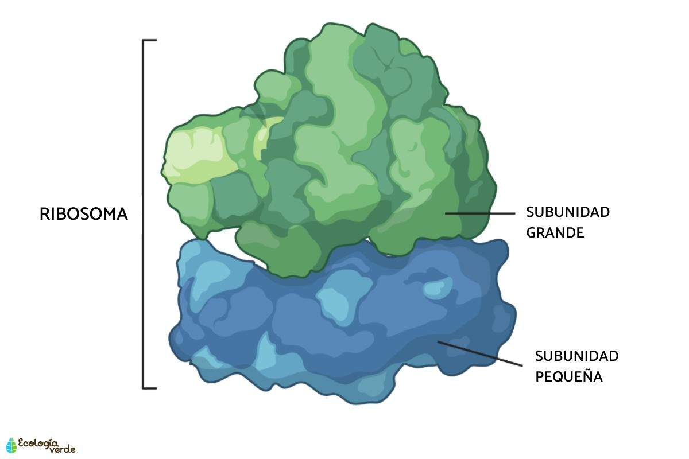
Los ribosomas son orgánulos celulares compuestos de ARN y proteínas. Su función principal es traducir las instrucciones del ARN mensajero (ARNm) para sintetizar proteínas, las cuales son esenciales para el crecimiento, reparación y el funcionamiento general de la célula vegetal.
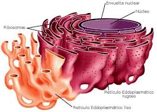
El retículo endoplasmático es una red intrincada de membranas que se extiende por el citoplasma y se divide en 2 tipos funcionales: el retículo endoplasmático rugoso y el liso. El primero, que está dotado de ribosomas en su superficie, se halla involucrado en la síntesis y el plegamiento de proteínas, mientras que, el retículo endoplasmático liso participa en la producción y el metabolismo de lípidos, así como en la detoxificación de compuestos.
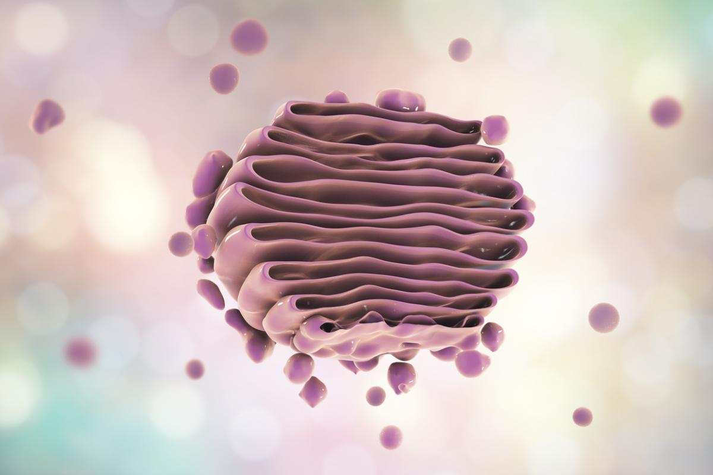
Es una estructura formada por sacos aplanados, que se encarga del procesamiento, empaquetamiento y transporte de distintas macromoléculas, como proteínas y lípidos. Participa en la elaboración de celulosa, la sustancia que compone la pared celular.
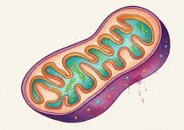
Son organelas de gran tamaño presentes en todas las células eucariotas, que funcionan como centro energético de la célula. En las mitocondrias se lleva a cabo la respiración celular, un conjunto de reacciones químicas que permiten obtener energía necesaria para realizar toda la actividad celular.
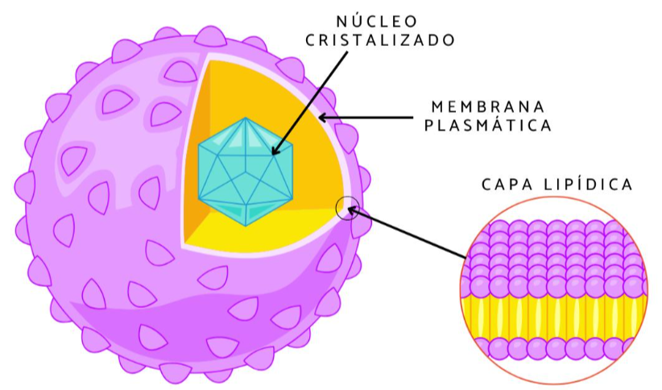
Los peroxisomas en las células vegetales son orgánulos dinámicos y esféricos rodeados por una sola membrana. Son fundamentales para la supervivencia de la planta al encargarse de la fotorrespiración, el metabolismo lipídico y la adaptación a cambios ambientales o etapas de desarrollo.
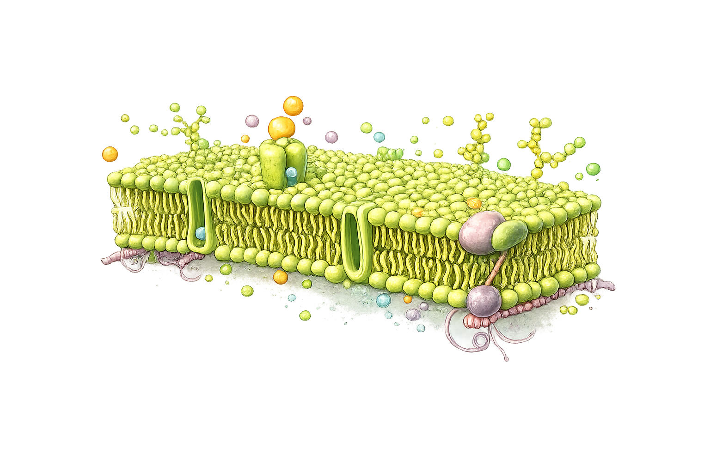
Es una envoltura compuesta por una doble capa de lípidos y proteínas, que distingue el interior de la célula de su exterior. La membrana plasmática regula la entrada y salida de sustancias entre el interior y el exterior de la célula.
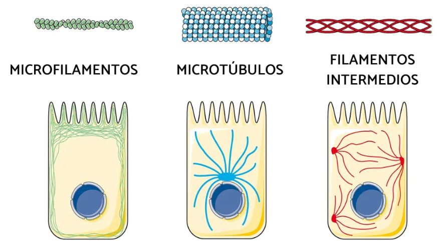
El citoesqueleto de la célula vegetal es una red dinámica de filamentos proteicos que se extiende por el citoplasma. Su función principal es proporcionar soporte mecánico, organizar los orgánulos, dirigir el tráfico intracelular y mediar tanto en la división celular como en la expansión y el crecimiento de la planta.
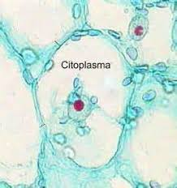
El citoplasma es el medio gelatinoso ubicado entre la membrana plasmática y el núcleo. Alberga los orgánulos celulares, da soporte estructural y es el sitio donde ocurren las reacciones metabólicas esenciales para la vida de la planta.